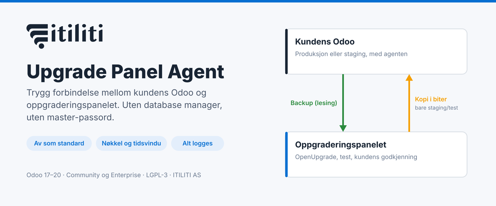
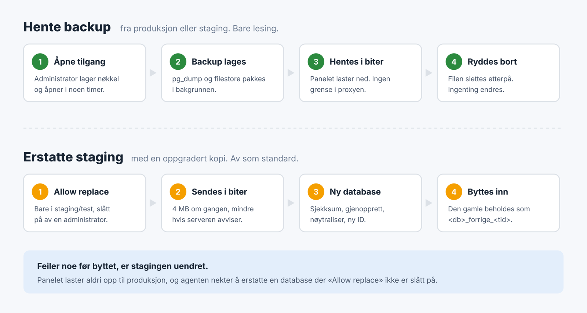
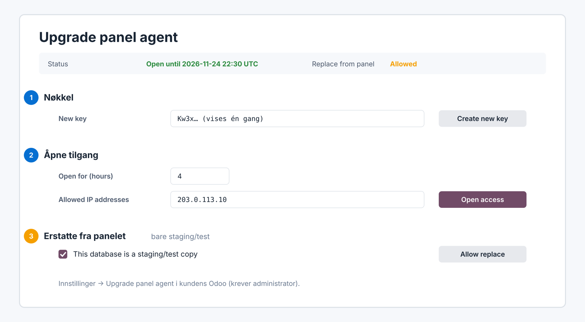

Agenten er en liten modul som kobler kundens Odoo til oppgraderingspanelet fra ITILITI.
Panelet kan hente en backup av databasen og, i en staging- eller testdatabase, legge inn en oppgradert kopi.
list_db kan stå av, og master-passordet deles aldri.
Ingenting virker før en administrator lager en nøkkel og åpner tilgang i et tidsvindu (standard 4 timer, høyst 72).
Nøkkelen vises én gang og lagres bare som hash. Du kan begrense til panelets IP-adresse. Etter 10 feil nøkler stenges tilgangen.
Hvert kall vises i loggen på agentsiden: tid, IP-adresse, hva som ble gjort og om det ble godtatt.

Hente backup fungerer i både produksjon og staging, og leser bare. Backupen lages i bakgrunnen og hentes i biter, så store databaser og grenser i proxyen foran Odoo er ikke et problem.
Erstatte staging må slås på for hver database, og bare i staging eller test.
Panelet sender den oppgraderte kopien i små biter. Agenten kontrollerer sjekksummen, gjenoppretter kopien
som en ny database, nøytraliserer den (planlagte handlinger, utgående e-post og betalinger slås av, og den får ny database-ID),
og bytter den inn. Den gamle databasen beholdes som <database>_forrige_<tid>,
så du kan gå tilbake. Feiler noe før byttet, er stagingen uendret.

Slå aldri på «Allow replace» i produksjon. Oppgraderingspanelet laster heller aldri opp til produksjon.
https://github.com/itilitias/odoo-upgrade-agent, grenen main.upgrade_panel_agent i repoet de deployer fra.addons_path, og start Odoo på nytt.Modulen har Python-kode, så den kan ikke installeres med «Importer modul». Den virker på Odoo 17, 18, 19 og 20, Community og Enterprise.
Laget av ITILITI AS.